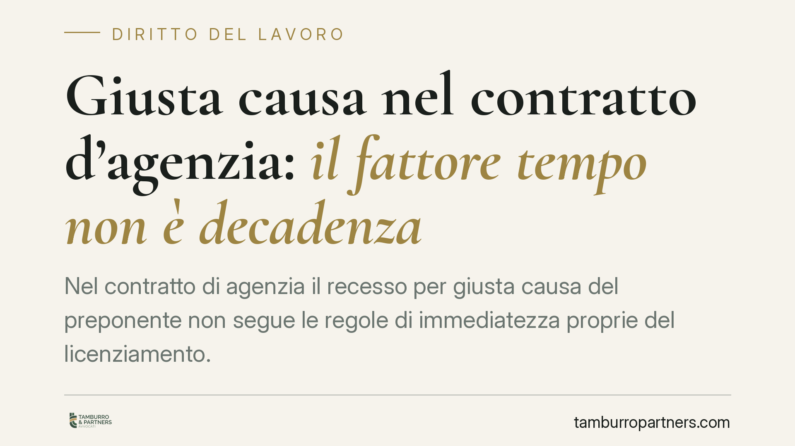

Giusta causa nel contratto d'agenzia: il fattore tempo non è decadenza
Nel contratto di agenzia il recesso per giusta causa del preponente non segue le regole di immediatezza proprie del licenziamento. Lo ribadisce la Corte di Cassazione: il tempo trascorso tra fatto e recesso non comporta decadenza automatica, ma va valutato come elemento sintomatico, con margini più ampi per imprese complesse e settori regolamentati.

Il principio affermato
La Corte di Cassazione, Sezione Lavoro, è tornata sul tema del recesso per giusta causa nel contratto di agenzia (art. 1751 c.c.). Il punto è netto: la disciplina dell'immediatezza della contestazione, tipica del rapporto di lavoro subordinato, non si applica automaticamente al rapporto di agenzia.
Nel lavoro dipendente, l'art. 7 della Legge 300/1970 (Statuto dei lavoratori) impone al datore tempestività nella contestazione disciplinare e nell'irrogazione della sanzione. Il ritardo può tradursi in decadenza dal potere di recedere. Nell'agenzia, invece, questo schema non opera allo stesso modo: il tempo intercorso tra il fatto e il recesso non è un termine perentorio, ma un indizio da pesare in concreto.
*Nota redazionale: gli estremi esatti della pronuncia (numero e anno) sono in corso di verifica presso le banche dati ufficiali e saranno indicati nella versione definitiva. Il principio di diritto qui illustrato riflette l'orientamento consolidato della Sezione Lavoro.*
Inquadramento normativo
Il contratto di agenzia è regolato dagli artt. 1742 e seguenti c.c. L'art. 1751 disciplina la cessazione del rapporto e l'indennità spettante all'agente. Il comma 2 della norma esclude il diritto all'indennità quando il preponente recede per un inadempimento dell'agente talmente grave da non consentire la prosecuzione, nemmeno provvisoria, del rapporto: è la cosiddetta giusta causa.
La valutazione si colloca all'interno dei principi di correttezza e buona fede che governano l'esecuzione del contratto (artt. 1175 e 1375 c.c.). È qui che il fattore tempo assume rilievo: un'attesa prolungata può segnalare che il fatto, in concreto, non era così grave da precludere la continuazione del rapporto. Non si tratta di una regola matematica, ma di un elemento sintomatico da leggere caso per caso.
La differenza con il lavoro subordinato
La distinzione è sostanziale. Nel lavoro dipendente l'immediatezza tutela il lavoratore dalla pendenza indefinita del potere disciplinare e presidia il suo diritto di difesa. Nell'agenzia, rapporto tra imprenditori autonomi, questa esigenza di protezione ha diverso spessore.
Di conseguenza, il preponente dispone di un margine più ampio per accertare i fatti, soprattutto quando l'organizzazione è articolata o il settore è regolamentato. Si pensi alle reti di vendita estese o all'attività del consulente finanziario abilitato all'offerta fuori sede (art. 31 TUF, D.Lgs. 58/1998), dove le verifiche interne e gli adempimenti verso le autorità di vigilanza possono richiedere tempi tecnici non comprimibili.
Il rischio dell'eccesso di attesa
Il principio non va però letto come licenza di temporeggiare. Se l'intervallo tra la conoscenza del fatto e il recesso diventa irragionevole, il giudice può trarne la conseguenza opposta: la gravità dedotta non era reale, perché il preponente ha tollerato la prosecuzione del rapporto.
In altri termini, il tempo lavora in due direzioni. Protegge il preponente che accerta con diligenza; penalizza chi lascia maturare la situazione senza una ragione verificabile. La chiave resta la coerenza tra la condotta tenuta e la gravità invocata.
Implicazioni pratiche
Per il preponente, la pronuncia offre respiro ma impone metodo. Il recesso per giusta causa non si difende con la rapidità, bensì con la ricostruzione documentata del percorso di accertamento. Per l'agente, resta aperto lo spazio difensivo: contestare la proporzionalità e dimostrare che il ritardo svela l'insussistenza della giusta causa, con conseguente diritto all'indennità ex art. 1751 c.c.
Cosa fare in concreto
- Documenta il percorso di accertamento: annota date, segnalazioni, verifiche interne e interlocuzioni con le autorità di vigilanza, così da giustificare l'eventuale intervallo temporale.
- Motiva il recesso in modo analitico: descrivi i fatti, la loro gravità e il nesso con l'impossibilità di proseguire il rapporto, evitando formule generiche.
- Verifica la coerenza della condotta: assicurati che il comportamento tenuto nell'intervallo non contraddica la gravità dedotta.
- Considera la specificità del settore: nei comparti regolamentati valuta i tempi tecnici degli adempimenti di vigilanza come elemento a sostegno della tempistica.
- Analizza il caso concreto prima di procedere: la fondatezza del recesso dipende dalla sostanza dei fatti e non da schemi automatici.
Disclaimer
Contributo informativo a cura di Tamburro & Partners Avvocati - Avv. Giuseppe Tamburro. Non costituisce parere legale.
Ogni storia di lavoro ha i suoi tempi.
Se gestisci HR e vuoi un confronto su contenzioso, ispezioni o licenziamenti, scrivi allo studio. Ti rispondiamo entro un giorno lavorativo.